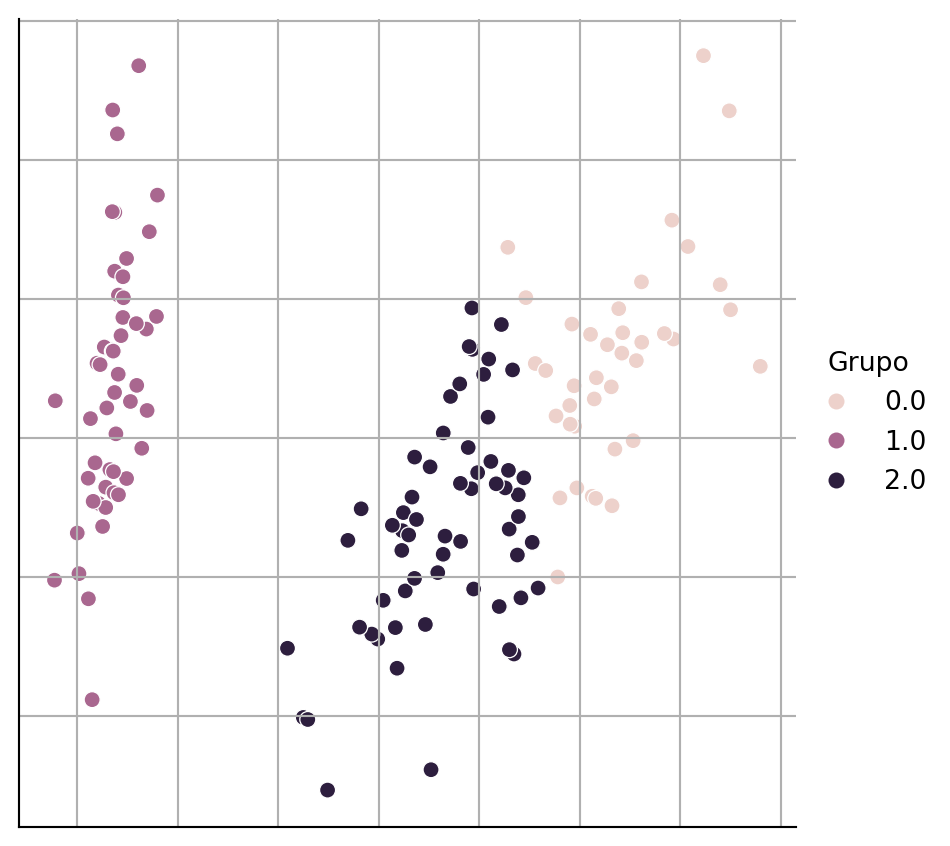
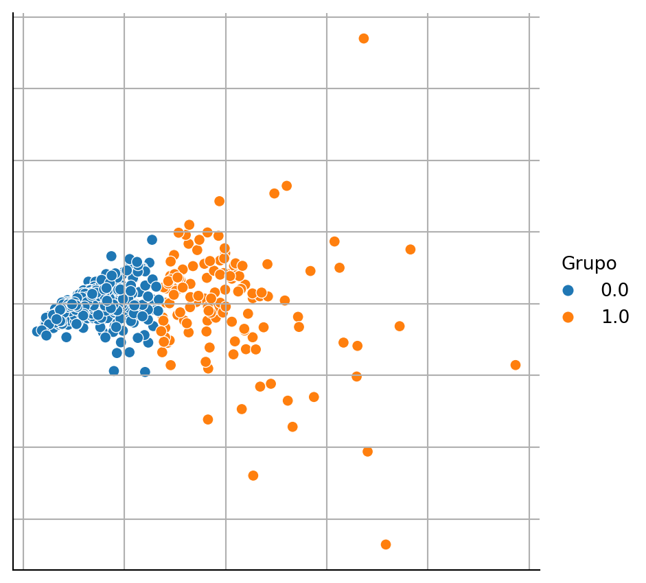
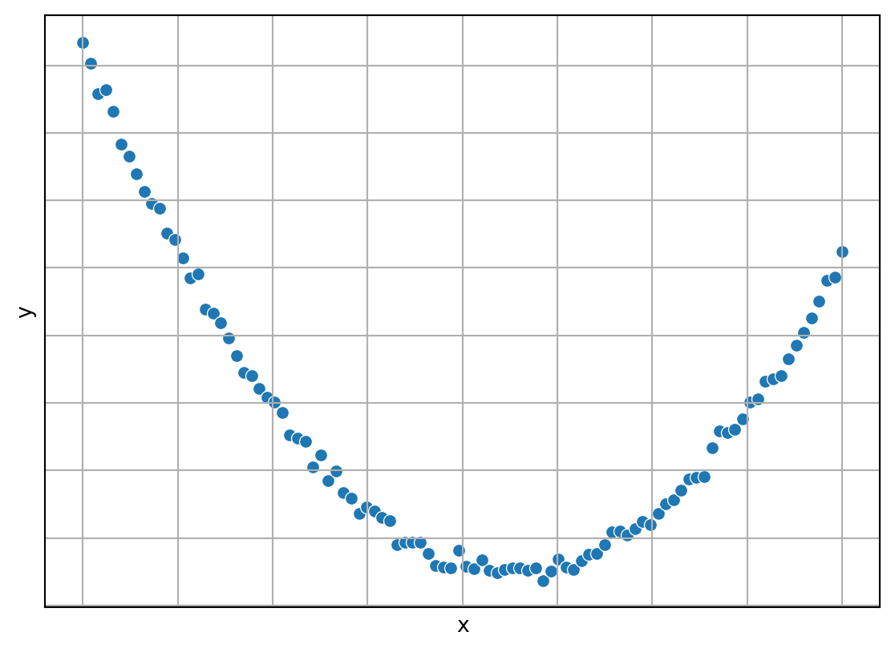

El objetivo de la unidad es explicar el área de aprendizaje computacional, los diferentes tipos de aprendizaje que la componen, la metodología general del área y su relación con otras áreas del conocimiento.
1.1 Aprendizaje Computacional
Utilizando la descripción de Langley (1986), se puede definir el aprendizaje computacional como una rama de la Inteligencia Artificial (IA) que estudia los enfoques computacionales capaces de aprender y mejorar su rendimiento con el paso del tiempo. En sus inicios, el campo estaba enfocado al desarrollo de representaciones simbólicas, de la misma manera que la IA, sin prohibir las representaciones numéricas. Actualmente, el campo ha cambiado de dirección privilegiando las representaciones numéricas a las simbólicas, en particular, este documento se enfoca solamente a representaciones numéricas.
Actividad
Leer la carta editorial de Langley (1986) para conocer la visión que se tenía de aprendizaje computacional en esa época y contrastarla con la visión actual.
De acuerdo a Breiman (2001), existen dos metas al analizar datos donde es posible identificar valores de entrada y su respuesta. Estos objetivos son el predecir la respuesta de futuros eventos y el segundo es extraer conocimiento del proceso o fenómeno. Estas metas han dado origen a dos culturas en el modelado de los datos: la cultura del modelado de datos y la cultura del modelado de algoritmos.
En la cultura del modelado de datos, se asume que los datos provienen de una función que dependen de los valores de entrada, un conjunto de parámetros y ruido. Utilizando los datos se estiman los parámetros y si los datos cumplen con las condiciones impuestas a la función, entonces se conoce el procedimiento que genera los datos y se está en la posición de obtener conocimiento del sistema, es decir se atacó la segunda meta. Dado que se tienen los parámetros y la estructura de la función es factible hacer predicciones de futuros eventos (primera meta).
En la cultura del modelado del algoritmo, no se asume ninguna estructura al sistema que genera los datos, el procedimiento es diseñar un algoritmo que replique la respuesta dada las entradas. Considerando que no se está asumiendo ningún modelo particular entonces el obtener conocimiento del sistema no es un prioridad. Por otro lado, es una prioridad encontrar el algoritmo que mejor se reproduzca los datos y por lo tanto se desarrollan diferentes estrategias para medir el rendimiento del algoritmo y poder estimar su comportamiento en diferentes escenarios. El área de aprendizaje computacional se encuentra en esta segunda cultura.
Actividad
Leer el artículo de Breiman (2001) para profundizar en las ventajas y desventajas de cada una de las culturas y como estas influyen en la forma de abordar un problema. En este momento no es necesario detenerse en la parte técnica de los algoritmos descritos en el artículo.
Existen diferentes tipos de aprendizaje computacional, los mas comunes son: aprendizaje supervisado, aprendizaje no-supervisado y aprendizaje por refuerzo. En aprendizaje supervisado se crean modelos partiendo de un conjunto de pares, entrada y salida, donde el objetivo es encontrar un modelo que logra aprender esta relación y predecir ejemplos no vistos en el proceso, en particular a esto se le conoce como inductive learning. Complementando este tipo de aprendizaje supervisado se tiene lo que se conoce como transductive learning, en el cual se cuenta con un conjunto de pares y solamente se requiere conocer la salida en otro conjunto de datos. En este segundo tipo de aprendizaje todos los datos son conocidos en el proceso de aprendizaje.
Aprendizaje no-supervisado es aquel donde se tiene un conjunto de entradas y se busca aprender alguna relación de estas entradas, por ejemplo, generando grupos o utilizando estas entradas para hacer una transformación o encontrar un patrón.
Finalmente aprendizaje por refuerzo es aquel donde se tiene un agente que tiene que aprender como interactuar con un ambiente. La interacción es tomando una acción en cada diferente estado del ambiente. Por ejemplo, el agente puede ser un jugador virtual en un juego de ajedrez entonces la acción es identificar y mover una pieza en el tablero, el objetivo de ganar la partida. La característica de aprendizaje por refuerzo es que el agente va a recibir una recompensa al final de la interacción con el ambiente, e.g., final del juego y el objetivo es optimizar las acciones para que la recompensa sea la mayor posible.
El área de aprendizaje computacional ha tenido un crecimiento importante en los últimos años, algunos ejemplos del impacto de área se pueden encontrar en artículos publicados en la revista de la editorial Nature. Por ejemplo, en el área médica en específico en Cardiología Hannun et al. (2019) propone una metodología para detectar arritmias o en dermatología Esteva et al. (2017) propone un algoritmo para la detección de cancer.
Cabe mencionar que los tres tipos de aprendizaje no son excluyentes uno del otro, comúnmente para resolver un problema complejo se combinan diferentes tipos de aprendizaje y otras tecnologías de IA para encontrar una solución aceptable. Probablemente una de las pruebas más significativas de lo que puede realizarse con aprendizaje automático es lo realizado por AlphaGo descrito por Silver et al. (2016) y en Silver et al. (2017) se quitan una de las restricciones originales, la cual consiste en contar con un conjunto de jugadas realizadas por expertos.
En el área de aprendizaje, hay una tendencia de utilizar plataformas donde diferentes empresas u organismos gubernamentales o sin fines de lucro, ponen un problema e incentivan al publico en general a resolver este problema. La plataforma sirve de mediador en este proceso. Ver por ejemplo https://www.kaggle.com.
En el ámbito científico también se han generado este tipo de plataformas aunque su objetivo es ligeramente diferente, lo que se busca es tener una medida objetiva de diferentes soluciones y en algunos casos facilitar la reproducibilidad de las soluciones. Ver por ejemplo http://codalab.org.
1.2 Metodología General en Aprendizaje Supervisado y No Supervisado
Antes de continuar con la descripción de los diferentes tipos de aprendizaje es importante mencionar la metodología que se sigue en los problemas de aprendizaje supervisado y no supervidado
Todo empieza con un conjunto de datos \(\mathcal D\) que tiene la información del fenómeno de interés.
Se selecciona el conjunto de entrenamiento \(\mathcal T \subseteq \mathcal D\).
Se diseña un algoritmo, \(f\), utilizando \(\mathcal T\).
Se utiliza \(f\) para estimar las características modeladas.
Se mide el rendimiento de \(f\).
1.3 Aprendizaje No Supervisado
Iniciamos la descripción de los diferentes tipos de aprendizaje computacional con aprendizaje no-supervisado; el cual inicia con un conjunto de elementos. Estos tradicionalmente se puede transformar en conjunto de vectores, i.e. \(\mathcal D = \{ x_1, \ldots, x_N \}\), donde \(x_i \in \mathbb R^d\). Durante este curso asumiremos que esta transformación existe y en algunos casos se hará explícito el algoritmo de transformación.
El objetivo en aprendizaje no supervisado es desarrollar algoritmos capaces de encontrar patrones en los datos, es decir, en \(\mathcal D\). Existen diferentes tareas que se pueden considerar dentro de este tipo de aprendizaje. Por ejemplo, el agrupamiento puede servir para segmentar clientes o productos, en otra línea también cabría el análisis del carrito de compras (Market Basket Analysis); donde el objetivo es encontrar la co-ocurrencias de productos, es decir, se quiere estimar la probabilidad de que habiendo comprado un determinado artículo también se compre otro artículo. Con esta descripción ya se podrá estar imaginando la cantidad de aplicaciones en las que este tipo de algoritmos es utilizado en la actualidad.
Regresando a la representación vectorial, existen casos donde se pueden visualizar los elementos de \(\mathcal D\), lo cuales están representados como puntos que se muestran en la Figura 1.1. Claramente esto solo es posible si \(x_i \in \mathbb R^2\) o si se hace algún tipo de transformación \(f: \mathbb R^d \rightarrow \mathbb R^2\), como se realizó en la figura.
Código
from sklearn import decompositionfrom sklearn.datasets import load_irisfrom matplotlib import pylab as pltimport seaborn as snsimport pandas as pdimport numpy as npD, y = load_iris(return_X_y=True)pca = decomposition.PCA(n_components=2).fit(D)Dn = pca.transform(D)Dn = np.concatenate((Dn, np.atleast_2d(y).T), axis=1)df = pd.DataFrame(Dn, columns=['x', 'y', 'Clase'])fig = sns.relplot(data=df, kind='scatter', x='x', y='y')fig.tick_params(bottom=False, top=False, left=False, right=False, labelbottom=False, labelleft=False)fig.set(xlabel=None, ylabel=None)plt.grid()
Figura 1.1: Proyección de los datos del Iris en dos dimensiones
En la Figura 1.1 se pueden observar dos o tres grupos de puntos, entonces el objetivo sería crear el algoritmo que dado \(\mathcal D\) regrese un identificador por cada elemento, dicho identificador representa el grupo al que pertenece el elemento en cuestión. Esta tarea se le conoce como agrupamiento (Clustering). Asumiendo que se aplica un algoritmo de agrupamiento a los datos anteriores; entonces, dado que podemos visualizar los datos, es factible representar el resultado del algoritmo si a cada punto se le asigna un color dependiendo de la clase a la que pertenece. La Figura 1.2 muestra el resultado de este procedimiento.
Código
from sklearn.cluster import KMeansfrom sklearn import decompositionfrom sklearn.datasets import load_irisfrom matplotlib import pylab as pltimport seaborn as snsimport pandas as pdimport numpy as npD, y = load_iris(return_X_y=True)m = KMeans(n_clusters=3, n_init='auto').fit(D)cl = m.predict(D)pca = decomposition.PCA(n_components=2).fit(D)Dn = pca.transform(D)Dn = np.concatenate((Dn, np.atleast_2d(y).T, np.atleast_2d(cl).T), axis=1)df = pd.DataFrame(Dn, columns=['x', 'y', 'Clase', 'Grupo'])fig = sns.relplot(data=df, kind='scatter', x='x', y='y', hue='Grupo')fig.tick_params(bottom=False, top=False, left=False, right=False, labelbottom=False, labelleft=False)fig.set(xlabel=None, ylabel=None)plt.grid()

Figura 1.2: Proyección de agrupar los datos del Iris usando K-medias
Se puede observar en la figura anterior, el algoritmo de agrupamiento separa los puntos en tres grupos, representados por los colores diferentes colores. Cabe mencionar que utilizando algún otro criterio de optimización se hubiera podido encontrar dos grupos, el primero de ellos sería el grupo de los puntos que se encuentran a la izquierda de la figura y el segundo sería el grupo formado por los grupos que se encuentran en el centro y a la derecha de la figura. Es importante recalcar que no es necesario visualizar los datos para aplicar un algoritmo de agrupamiento. En particular el ejercicio de visualización de datos y del resultado de agrupamiento que se muestra en la figuras anteriores tiene el objetivo de generar una intuición de lo que está haciendo un algoritmo de agrupamiento.
Actividad
Generar la figura anterior para el conjunto de datos de Breast Cancer Wisconsin (Sección B.3.1). Es necesario considerar que ese problema solamente tiene dos clases y el problema del Iris (Sección B.3.2) tiene tres clases, entonces se tienen que hacer las modificaciones para atender este cambio.
El procedimiento desarrollado debe de generar una figura similar a la mostrada en la Figura 1.3

Figura 1.3: Proyección de agrupar los datos de Breast Cancer Wisconsin usando K-medias
1.4 Aprendizaje Supervisado
Aprendizaje supervisado inicia con un conjunto de pares, entrada y salida; la Figura 1.4 ilustra el mecanismo que genera estos pares, del lado izquierdo se tiene las variables medibles que entran al proceso o fenómeno que se desconoce y del lado derecho se mide la(s) variable(s) respuesta, es decir, la(s) salida(s) del sistema. En otras palabras se tiene \(\mathcal D = \{ (x_1, y_1), \ldots, (x_N, y_N )\}\), donde \(x_i \in \mathbb R^d\) corresponde a la \(i\)-ésima entrada y \(y_i\) es la salida asociada a esa entrada.
flowchart LR
Entrada([Entradas]) --> Proceso[Proceso / Fenómeno]
Proceso --> Salidas([Salidas])
Figura 1.4: Datos de Aprendizaje Supervisado
Considerando que se desconoce el modelo del proceso o fenómeno que generó la respuesta y además que pueden existir variables de entrada que no son medibles, se puede definir el objetivo de aprendizaje supervisado como encontrar un algoritmo o función, \(f\), capaz de regresar la salida, \(y\), dada una entrada \(x\).
Los posibles fines de desarrollar la función \(f\) es por un lado predecir la salida dada una nueva entrada \(x\) y por el otro lado extraer conocimiento del proceso que asocia la respuesta de las variables de entrada (ver Breiman (2001)). Estos dos metas se pueden contraponer, es decir, extraer conocimiento implica una reducción en la calidad de la predicción y viceversa mejorar la calidad de predicción en general trae consigo una menor capacidad para entender el fenómeno generador de datos.
Existe una gran variedad de problemas que se puede categorizar como tareas de aprendizaje supervisado, solamente hay que recordar que en todos los casos se inicia con un conjunto \(\mathcal D\) de pares entrada y salida. En ocasiones la construcción del conjunto es directa, por ejemplo en el caso de que se quiera identificar si una persona será sujeta a un crédito, entonces el conjunto a crear esta compuesto por las características de las personas que se les ha otorgado un crédito y el estado final de crédito, es decir, si el crédito fue pagado o no fue pagado. En otro ejemplo, suponiendo que se quiere crear un algoritmo capaz de identificar si un texto dado tiene una polaridad positiva o negativa, entonces el conjunto se crea recolectando textos y a cada texto un conjunto de personas decide si el texto dado es positivo o negativo y la polaridad final es el consenso de varias opiniones; a este problema en general se le conoce como análisis de sentimientos.
La cantidad de problema que se pueden poner en términos de aprendizaje supervisado es amplia, un problema tangible en esta época y relacionado a la pandemia del COVID-19 sería el crear un algoritmo que pudiera predecir cuántos serán los casos positivos el día de mañana dando como entradas las restricciones en las actividades; por ejemplo escuelas cerradas, restaurantes al 30% de capacidad entre otras.
Los ejemplos anteriores corresponden a dos de las clases de problemas que se resuelven en aprendizaje supervisado estas son problemas de clasificación y regresión. Definamos de manera formal estos dos problemas. Cuando \(y \in \{0, 1\}\) se dice que es un problema de clasificación binaria, por otro lado cuando \(y \in \{0, 1\}^K\) se encuentra uno en clasificación multi-clase o multi-etiqueta y finalmente si \(y \in \mathbb R\) entonces es un problema de regresión.
Haciendo la liga entre los ejemplos y las definiciones anteriores, podemos observar que el asignar un crédito o la polaridad a un texto es un problema de clasificación binaria, dado que se puede asociar 0 y 1 a la clase positivo y negativo; y en el otro caso a pagar o no pagar el crédito. Si el problema tiene mas categorías, supongamos que se desea identificar positivo, negativo o neutro, entonces se estaría en el problema de clasificación multi-clase. Por otro lado el problema de predecir el número de casos positivos se puede considerar como un problema de regresión, dado que el valor a predecir difícilmente se podría considerar como una categoría.
Al igual que en aprendizaje no supervisado, en algunos casos es posible visualizar los elementos de \(\mathcal D\), el detalle adicional es que cada objeto tiene asociado una clase, entonces se selecciona un color para representar cada clase. En la Figura 1.5 se muestra el resultado donde los elementos de \(\mathcal D\) se encuentra en \(\mathbb R^2\) y el color representa cada una de la clases de este problema de clasificación binaria.
Código
from sklearn.cluster import KMeansfrom sklearn import decompositionfrom sklearn.datasets import load_irisfrom matplotlib import pylab as pltimport seaborn as snsimport pandas as pdimport numpy as npD, y = load_iris(return_X_y=True)mask = y <=1D = D[mask]y = y[mask]pca = decomposition.PCA(n_components=2).fit(D)Dn = pca.transform(D)df = pd.DataFrame(Dn, columns=['x', 'y'])df['Clase'] = ['P'if i else'N'for i in y]fig = sns.relplot(data=df, kind='scatter', x='x', y='y', hue='Clase')fig.tick_params(bottom=False, top=False, left=False, right=False, labelbottom=False, labelleft=False)fig.set(xlabel=None, ylabel=None)plt.grid()
Figura 1.5: Proyección del Iris mostrando dos clases linealmente separables
Actividad
Generar la figura anterior para el conjunto de datos de Breast Cancer Wisconsin (Sección B.3.1). Como se mencionó, el problema tiene dos clases entonces no se necesita ningún tipo de transformación en el número de clases como se hizo en el ejemplo anterior. La Figura 1.6 muestra el resultado de la actividad.
Figura 1.6: Proyección de los datos de Breast Cancer Wisconsin.
Usando esta representación es sencillo imaginar que el problema de clasificación se trata en encontrar una función que separe los puntos naranjas de los puntos azules, como se pueden imagina una simple línea recta podría separar estos puntos. La Figura 1.7 muestra un ejemplo de lo que haría un clasificador representado por la línea; la clase es dada por el signo de \(ax + by + c\), donde \(a\), \(b\) y \(c\) son parámetros identificados a partir de \(\mathcal D\).
Código
from sklearn.cluster import KMeansfrom sklearn.svm import LinearSVCfrom sklearn import decompositionfrom sklearn.datasets import load_irisfrom matplotlib import pylab as pltimport seaborn as snsimport pandas as pdimport numpy as npD, y = load_iris(return_X_y=True)mask = y <=1D = D[mask]y = y[mask]pca = decomposition.PCA(n_components=2).fit(D)Dn = pca.transform(D)linear = LinearSVC(dual=False).fit(Dn, y)w_1, w_2 = linear.coef_[0]w_0 = linear.intercept_[0]df = pd.DataFrame(Dn, columns=['x1', 'x2'])df['Clase'] = ['N'if i else'P'for i in y]g_0 = [dict(x1=x, x2=y, tipo='g(x)=0')for x, y inzip(Dn[:, 0], (-w_0 - w_1 * Dn[:, 0]) / w_2)]g = pd.DataFrame(g_0)g['Tipo'] ='g(x)=0'df = pd.concat((df, g))ax = sns.scatterplot(data=df, x='x1', y='x2', hue='Clase', legend=True)sns.lineplot(data=df, x='x1', y='x2', ax=ax, hue='Tipo', palette=['k'], legend=True)ax.tick_params(axis="both", which="both", bottom=False, top=False, left=False, right=False, labelbottom=False, labelleft=False)ax.set(xlabel=None, ylabel=None)plt.grid()
Figura 1.7: Proyección del Iris mostrando dos clases linealmente separables
Siguiendo en esta misma línea, también es posible observar los puntos en un problema de regresión, solamente que en este caso un eje corresponde a las entradas, i.e. \(x\), y el otro eje es la salida, i.e. \(y\). La Figura 1.8 muestra un ejemplo de regresión, donde se puede observar que la idea es una encontrar una función que pueda seguir de manera adecuada los puntos datos.
Código
from matplotlib import pylab as pltimport seaborn as snsimport pandas as pdimport numpy as npx = np.linspace(-1, 1, 100)y =12.3* x**2-3.2* x +1.2ym = np.random.normal(loc=0, scale=0.2, size=x.shape[0]) + ydf = pd.DataFrame(dict(x=x, y=y, ym=ym))# sns.lineplot(data=df, x='x', y='y', legend=False, color='k')fig = sns.scatterplot(data=df, x='x', y='ym', legend=False)fig.tick_params(bottom=False, top=False, left=False, right=False, labelbottom=False, labelleft=False)fig.set(xlabel='x', ylabel='y')plt.grid()

Figura 1.8: Problema de regresión
El problema de regresión es muy conocido y seguramente ya se imaginaron que la respuesta sería encontrar los parámetros de una parábola. La Figura 1.9 muestra una visualización del regresor, mostrado en color negro y los datos de entrenamiento en color azul.
Figura 1.9: Problema de regresión con función con función estimada
Al igual que en aprendizaje no supervisado, este ejercicio de visualización no es posible en todos los problemas de aprendizaje supervisado, pero si permite ganar intuición sobre la forma en que trabajan estos algoritmos.
1.5 Definiciones de Aprendizaje Supervisado
El primer paso es empezar a definir los diferentes conjuntos con los que se trabaja en aprendizeje computacional. Todo inicia con el conjunto de entrenamiento identificado en este documento como \(\mathcal T\). Este conjunto se utiliza para estimar los parámetros o en general buscar un algoritmo que tenga el comportamiento esperado.
Se puede asumir que existe una función \(f\) que genera la relación entrada salida mostrada en \(\mathcal T\), es decir, idealmente se tiene que \(\forall_{(x, y) \in \mathcal D} f(x) = y\). En este contexto, aprendizaje supervisado se entiende como el proceso de encontrar una función \(h^*\) que se comporta similar a \(f\).
Para encontrar \(h^*\), se utiliza \(\mathcal T\); el conjunto de hipótesis (funciones), \(\mathcal H\), que se considera puede aproximar \(f\); una función de error, \(L\); y el error empírico \(E(h \mid \mathcal T) = \sum_{(x, y) \in \mathcal T} L(y, h(x))\). Utilizando estos elementos la función buscada es: \(h^* = \textsf{argmin}_{h \in \mathcal{H}} E(h \mid \mathcal T)\).
El encontrar la función \(h^*\) no resuelve el problema de aprendizaje en su totalidad, además se busca una función que sea capaz de generalizar, es decir, que pueda predecir correctamente instancias no vistas. Considerando que se tiene un conjunto de prueba, \(\mathcal G=\{(x_i, y_i)\}\) para \(i=1 \ldots M\), donde \(\mathcal T \cap \mathcal G = \emptyset\) y \(\mathcal T \cup \mathcal G = \mathcal D.\) La idea es que el error empírico sea similar en el conjunto de entrenamiento y prueba. Es decir \(E(h^* \mid \mathcal T) \approx E(h^* \mid \mathcal G)\).
1.5.1 Estilos de Aprendizaje
Utilizando \(\mathcal T\) y \(\mathcal G\) podemos definir inductive learning como el proceso de aprendizaje en donde solamente se utiliza \(\mathcal T\) y el algoritmo debe de ser capaz de predecir cualquier instancia. Por otro lado, transductive learning es el proceso de aprendizaje donde se utilizar \(\mathcal T \cup \{ x \mid (x, y) \in \mathcal G \}\) para aprender y solamente es de interés el conocer la clase o variable dependiente del conjunto \(\mathcal G\).
1.5.2 Sobre-aprendizaje
Existen clases de algoritmos, \(\mathcal H\), que tienen un mayor grado de libertad el cual se ve reflejado en una capacidad superior para aprender, pero por otro lado, existen problemas donde no se requiere tanta libertad, esta combinación se traduce en que el algoritmo no es capaz de generalizar y cuantitativamente se ve como \(E(h^* \mid \mathcal T) \ll E(h^* \mid \mathcal G)\).
Para mostrar este caso hay que imaginar que se tiene un algoritmo que guarda el conjunto de entrenamiento y responde lo siguiente:
Es fácil observar que este algoritmo tiene \(E(h^* \mid \mathcal T) = 0\) dado que se aprende todo el conjunto de entrenamiento.
La Figura 1.10 muestra el comportamiento de un algoritmo que sobre-aprende, el algoritmo se muestra en la línea naranja, la línea azul corresponde a una parábola (cuyos parámetros son identificados con los datos de entrenamiento) y los datos de entrenamiento no se muestran; pero se pueden visualizar dado que son datos generados por una parábola mas un error gaussiano. Entonces podemos ver que la línea naranja pasa de manera exacta por todos los datos de entrenamiento y da como resultado la línea naranja que claramente tiene un comportamiento mas complejo que el comportamiento de la parábola que generó los datos.
Figura 1.10: Sobre-aprendizaje en un problema de regresión
1.5.3 Sub-aprendizaje
Por otro lado existen problemas donde el conjunto de algoritmos \(\mathcal H\) no tienen los grados de libertad necesarios para aprender, dependiendo de la medida de error esto se refleja como \(E(h^* \mid \mathcal T) \gg 0\). La Figura 1.11 muestra un problema de regresión donde el algoritmo de aprendizaje presenta el problema de sub-aprendizaje.
Esteva, Andre, Brett Kuprel, Roberto A. Novoa, Justin Ko, Susan M. Swetter, Helen M. Blau, y Sebastian Thrun. 2017. «Dermatologist-level classification of skin cancer with deep neural networks». Nature 542 (7639): 115-18. https://doi.org/10.1038/nature21056.
Hannun, Awni Y., Pranav Rajpurkar, Masoumeh Haghpanahi, Geoffrey H. Tison, Codie Bourn, Mintu P. Turakhia, y Andrew Y. Ng. 2019. «Cardiologist-level arrhythmia detection and classification in ambulatory electrocardiograms using a deep neural network». Nature Medicine 25 (1): 65-69. https://doi.org/10.1038/s41591-018-0268-3.
Silver, David, Aja Huang, Chris J. Maddison, Arthur Guez, Laurent Sifre, George van den Driessche, Julian Schrittwieser, et al. 2016. «Mastering the game of Go with deep neural networks and tree search». Nature 529 (7587): 484-89. https://doi.org/10.1038/nature16961.
Silver, David, Julian Schrittwieser, Karen Simonyan, Ioannis Antonoglou, Aja Huang, Arthur Guez, Thomas Hubert, et al. 2017. «Mastering the game of Go without human knowledge». Nature 550 (7676): 354-59. https://doi.org/10.1038/nature24270.
Ejecutar el código
# Introducción {#sec-intro-01}El **objetivo** de la unidad es explicar el área de aprendizaje computacional, los diferentes tipos de aprendizaje que la componen, la metodología general del área y su relación con otras áreas del conocimiento. ::: {.content-visible when-format="html"}---{{< video https://www.youtube.com/embed/FlipLNC36Zo width="560" height="315" >}}---:::## Aprendizaje ComputacionalUtilizando la descripción de @langley1986machine, se puede definir el **aprendizaje computacional** como una rama de la Inteligencia Artificial (IA) que estudia los enfoques computacionales capaces de aprender y mejorar su rendimiento con el paso del tiempo. En sus inicios, el campo estaba enfocado al desarrollo de representaciones simbólicas, de la misma manera que la IA, sin prohibir las representaciones numéricas. Actualmente, el campo ha cambiado de dirección privilegiando las representaciones numéricas a las simbólicas, en particular, este documento se enfoca solamente a representaciones numéricas. ::: {.callout-tip collapse="true"}### ActividadLeer la carta editorial de @langley1986machine para conocer la visión que se tenía de aprendizaje computacional en esa época y contrastarla con la visión actual. :::De acuerdo a @breiman2001statistical, existen dos metas al analizar datos donde es posible identificar valores de entrada y su respuesta. Estos objetivos son el **predecir** la respuesta de futuros eventos y el segundo es **extraer conocimiento** del proceso o fenómeno. Estas metas han dado origen a dos culturas en el modelado de los datos: la cultura del modelado de datos y la cultura del modelado de algoritmos. En la cultura del modelado de datos, se asume que los datos provienen de una función que dependen de los valores de entrada, un conjunto de parámetros y ruido. Utilizando los datos se estiman los parámetros y si los datos cumplen con las condiciones impuestas a la función, entonces se conoce el procedimiento que genera los datos y se está en la posición de obtener conocimiento del sistema, es decir se atacó la segunda meta. Dado que se tienen los parámetros y la estructura de la función es factible hacer predicciones de futuros eventos (primera meta).En la cultura del modelado del algoritmo, no se asume ninguna estructura al sistema que genera los datos, el procedimiento es diseñar un algoritmo que replique la respuesta dada las entradas. Considerando que no se está asumiendo ningún modelo particular entonces el obtener conocimiento del sistema no es un prioridad. Por otro lado, es una prioridad encontrar el algoritmo que mejor se reproduzca los datos y por lo tanto se desarrollan diferentes estrategias para medir el rendimiento del algoritmo y poder estimar su comportamiento en diferentes escenarios. El área de aprendizaje computacional se encuentra en esta segunda cultura. ::: {.callout-tip collapse="true"}### ActividadLeer el artículo de @breiman2001statistical para profundizar en las ventajas y desventajas de cada una de las culturas y como estas influyen en la forma de abordar un problema. En este momento no es necesario detenerse en la parte técnica de los algoritmos descritos en el artículo. :::Existen diferentes tipos de aprendizaje computacional, los mas comunes son: aprendizaje supervisado, aprendizaje no-supervisado y aprendizaje por refuerzo. En **aprendizaje supervisado** se crean modelos partiendo de un conjunto de pares, entrada y salida, donde el objetivo es encontrar un modelo que logra aprender esta relación y predecir ejemplos no vistos en el proceso, en particular a esto se le conoce como _inductive learning_. Complementando este tipo de aprendizaje supervisado se tiene lo que se conoce como _transductive learning_, en el cual se cuenta con un conjunto de pares y solamente se requiere conocer la salida en otro conjunto de datos. En este segundo tipo de aprendizaje todos los datos son conocidos en el proceso de aprendizaje. **Aprendizaje no-supervisado** es aquel donde se tiene un conjunto de entradas y se busca aprender alguna relación de estas entradas, por ejemplo, generando grupos o utilizando estas entradas para hacer una transformación o encontrar un patrón. Finalmente **aprendizaje por refuerzo** es aquel donde se tiene un agente que tiene que aprender como interactuar con un ambiente. La interacción es tomando una acción en cada diferente estado del ambiente. Por ejemplo, el agente puede ser un jugador virtual en un juego de ajedrez entonces la acción es identificar y mover una pieza en el tablero, el objetivo de ganar la partida. La característica de aprendizaje por refuerzo es que el agente va a recibir una recompensa al final de la interacción con el ambiente, e.g., final del juego y el objetivo es optimizar las acciones para que la recompensa sea la mayor posible. El área de aprendizaje computacional ha tenido un crecimiento importante en los últimos años, algunos ejemplos del impacto de área se pueden encontrar en artículos publicados en la revista de la editorial [Nature](https://www.nature.com). Por ejemplo, en el área médica en específico en Cardiología @Hannun2019 propone una metodología para detectar arritmias o en dermatología @Esteva2017 propone un algoritmo para la detección de cancer.Cabe mencionar que los tres tipos de aprendizaje no son excluyentes uno del otro, comúnmente para resolver un problema complejo se combinan diferentes tipos de aprendizaje y otras tecnologías de IA para encontrar una solución aceptable. Probablemente una de las pruebas más significativas de lo que puede realizarse con aprendizaje automático es lo realizado por AlphaGo descrito por @Silver2016 y en @Silver2017 se quitan una de las restricciones originales, la cual consiste en contar con un conjunto de jugadas realizadas por expertos.En el área de aprendizaje, hay una tendencia de utilizar plataformas donde diferentes empresas u organismos gubernamentales o sin fines de lucro, ponen un problema e incentivan al publico en general a resolver este problema. La plataforma sirve de mediador en este proceso. Ver por ejemplo [https://www.kaggle.com]().En el ámbito científico también se han generado este tipo de plataformas aunque su objetivo es ligeramente diferente, lo que se busca es tener una medida objetiva de diferentes soluciones y en algunos casos facilitar la reproducibilidad de las soluciones. Ver por ejemplo [http://codalab.org]().## Metodología General en Aprendizaje Supervisado y No Supervisado {#sec-metodologia-general }Antes de continuar con la descripción de los diferentes tipos de aprendizaje es importante mencionar la metodología que se sigue en los problemas de aprendizaje supervisado y no supervidado1. Todo empieza con un conjunto de datos $\mathcal D$ que tiene la información del fenómeno de interés.2. Se selecciona el conjunto de entrenamiento $\mathcal T \subseteq \mathcal D$.3. Se diseña un algoritmo, $f$, utilizando $\mathcal T$.4. Se utiliza $f$ para estimar las características modeladas.5. Se mide el rendimiento de $f$.## Aprendizaje No Supervisado {#sec-aprendizaje-no-supervisado}Iniciamos la descripción de los diferentes tipos de aprendizaje computacional con **aprendizaje no-supervisado**; el cual inicia con un conjunto de elementos. Estos tradicionalmente se puede transformar en conjunto de vectores, i.e. $\mathcal D = \{ x_1, \ldots, x_N \}$, donde $x_i \in \mathbb R^d$. Durante este curso asumiremos que esta transformación existe y en algunos casos se hará explícito el algoritmo de transformación.El **objetivo** en aprendizaje no supervisado es desarrollar algoritmos capaces de encontrar patrones en los datos, es decir, en $\mathcal D$. Existen diferentes tareas que se pueden considerar dentro de este tipo de aprendizaje. Por ejemplo, el agrupamiento puede servir para segmentar clientes o productos, en otra línea también cabría el análisis del carrito de compras (Market Basket Analysis); donde el objetivo es encontrar la co-ocurrencias de productos, es decir, se quiere estimar la probabilidad de que habiendo comprado un determinado artículo también se compre otro artículo. Con esta descripción ya se podrá estar imaginando la cantidad de aplicaciones en las que este tipo de algoritmos es utilizado en la actualidad. Regresando a la representación vectorial, existen casos donde se pueden visualizar los elementos de $\mathcal D$, lo cuales están representados como puntos que se muestran en la @fig-puntos-iris. Claramente esto solo es posible si $x_i \in \mathbb R^2$ o si se hace algún tipo de transformación $f: \mathbb R^d \rightarrow \mathbb R^2$, como se realizó en la figura.```{python}#| label: fig-puntos-iris#| fig-cap: "Proyección de los datos del Iris en dos dimensiones"#| code-fold: truefrom sklearn import decompositionfrom sklearn.datasets import load_irisfrom matplotlib import pylab as pltimport seaborn as snsimport pandas as pdimport numpy as npD, y = load_iris(return_X_y=True)pca = decomposition.PCA(n_components=2).fit(D)Dn = pca.transform(D)Dn = np.concatenate((Dn, np.atleast_2d(y).T), axis=1)df = pd.DataFrame(Dn, columns=['x', 'y', 'Clase'])fig = sns.relplot(data=df, kind='scatter', x='x', y='y')fig.tick_params(bottom=False, top=False, left=False, right=False, labelbottom=False, labelleft=False)fig.set(xlabel=None, ylabel=None)plt.grid()```En la @fig-puntos-iris se pueden observar dos o tres grupos de puntos, entonces el objetivo sería crear el algoritmo que dado $\mathcal D$ regrese un identificador por cada elemento, dicho identificador representa el grupo al que pertenece el elemento en cuestión. Esta tarea se le conoce como agrupamiento (Clustering). Asumiendo que se aplica un algoritmo de agrupamiento a los datos anteriores; entonces, dado que podemos visualizar los datos, es factible representar el resultado del algoritmo si a cada punto se le asigna un color dependiendo de la clase a la que pertenece. La @fig-kmeans-iris muestra el resultado de este procedimiento. ```{python}#| label: fig-kmeans-iris#| fig-cap: "Proyección de agrupar los datos del Iris usando K-medias"#| code-fold: truefrom sklearn.cluster import KMeansfrom sklearn import decompositionfrom sklearn.datasets import load_irisfrom matplotlib import pylab as pltimport seaborn as snsimport pandas as pdimport numpy as npD, y = load_iris(return_X_y=True)m = KMeans(n_clusters=3, n_init='auto').fit(D)cl = m.predict(D)pca = decomposition.PCA(n_components=2).fit(D)Dn = pca.transform(D)Dn = np.concatenate((Dn, np.atleast_2d(y).T, np.atleast_2d(cl).T), axis=1)df = pd.DataFrame(Dn, columns=['x', 'y', 'Clase', 'Grupo'])fig = sns.relplot(data=df, kind='scatter', x='x', y='y', hue='Grupo')fig.tick_params(bottom=False, top=False, left=False, right=False, labelbottom=False, labelleft=False)fig.set(xlabel=None, ylabel=None)plt.grid()```Se puede observar en la figura anterior, el algoritmo de agrupamiento separa los puntos en tres grupos, representados por los colores diferentes colores. Cabe mencionar que utilizando algún otro criterio de optimización se hubiera podido encontrar dos grupos, el primero de ellos sería el grupo de los puntos que se encuentran a la izquierda de la figura y el segundo sería el grupo formado por los grupos que se encuentran en el centro y a la derecha de la figura. Es importante recalcar que no es necesario visualizar los datos para aplicar un algoritmo de agrupamiento. En particular el ejercicio de visualización de datos y del resultado de agrupamiento que se muestra en la figuras anteriores tiene el objetivo de generar una intuición de lo que está haciendo un algoritmo de agrupamiento. ::: {.callout-tip collapse="true"}### ActividadGenerar la figura anterior para el conjunto de datos de Breast Cancer Wisconsin (@sec-breast-cancer-wisconsin). Es necesario considerar que ese problema solamente tiene dos clases y el problema del Iris (@sec-iris) tiene tres clases, entonces se tienen que hacer las modificaciones para atender este cambio. El procedimiento desarrollado debe de generar una figura similar a la mostrada en la @fig-kmeans-breast-cancer```{python}#| label: fig-kmeans-breast-cancer#| fig-cap: "Proyección de agrupar los datos de Breast Cancer Wisconsin usando K-medias"#| echo: falsefrom sklearn.datasets import load_breast_cancerD, y = load_breast_cancer(return_X_y=True)m = KMeans(n_clusters=2, n_init='auto').fit(D)cl = m.predict(D)pca = decomposition.PCA(n_components=2).fit(D)Dn = pca.transform(D)Dn = np.concatenate((Dn, np.atleast_2d(y).T, np.atleast_2d(cl).T), axis=1)df = pd.DataFrame(Dn, columns=['x', 'y', 'Clase', 'Grupo'])fig = sns.relplot(data=df, kind='scatter', x='x', y='y', hue='Grupo')fig.tick_params(bottom=False, top=False, left=False, right=False, labelbottom=False, labelleft=False)fig.set(xlabel=None, ylabel=None)plt.grid()```:::## Aprendizaje Supervisado {#sec-aprendizaje-supervisado}Aprendizaje supervisado inicia con un conjunto de pares, entrada y salida; la @fig-datos-aprendizaje-supervisado ilustra el mecanismo que genera estos pares, del lado izquierdo se tiene las variables medibles que entran al proceso o fenómeno que se desconoce y del lado derecho se mide la(s) variable(s) respuesta, es decir, la(s) salida(s) del sistema. En otras palabras se tiene $\mathcal D = \{ (x_1, y_1), \ldots, (x_N, y_N )\}$, donde $x_i \in \mathbb R^d$ corresponde a la $i$-ésima entrada y $y_i$ es la salida asociada a esa entrada. ```{mermaid}%%| echo: false%%| fig-cap: Datos de Aprendizaje Supervisado%%| label: fig-datos-aprendizaje-supervisadoflowchart LR Entrada([Entradas]) --> Proceso[Proceso / Fenómeno] Proceso --> Salidas([Salidas])```Considerando que se desconoce el modelo del proceso o fenómeno que generó la respuesta y además que pueden existir variables de entrada que no son medibles, se puede definir el **objetivo** de aprendizaje supervisado como encontrar un algoritmo o función, $f$, capaz de regresar la salida, $y$, dada una entrada $x$.Los posibles fines de desarrollar la función $f$ es por un lado **predecir** la salida dada una nueva entrada $x$ y por el otro lado **extraer conocimiento** del proceso que asocia la respuesta de las variables de entrada (ver @breiman2001statistical). Estos dos metas se pueden contraponer, es decir, extraer conocimiento implica una reducción en la calidad de la predicción y viceversa mejorar la calidad de predicción en general trae consigo una menor capacidad para entender el fenómeno generador de datos. Existe una gran variedad de problemas que se puede categorizar como tareas de aprendizaje supervisado, solamente hay que recordar que en todos los casos se inicia con un conjunto $\mathcal D$ de pares entrada y salida. En ocasiones la construcción del conjunto es directa, por ejemplo en el caso de que se quiera identificar si una persona será sujeta a un crédito, entonces el conjunto a crear esta compuesto por las características de las personas que se les ha otorgado un crédito y el estado final de crédito, es decir, si el crédito fue pagado o no fue pagado. En otro ejemplo, suponiendo que se quiere crear un algoritmo capaz de identificar si un texto dado tiene una polaridad positiva o negativa, entonces el conjunto se crea recolectando textos y a cada texto un conjunto de personas decide si el texto dado es positivo o negativo y la polaridad final es el consenso de varias opiniones; a este problema en general se le conoce como análisis de sentimientos.La cantidad de problema que se pueden poner en términos de aprendizaje supervisado es amplia, un problema tangible en esta época y relacionado a la pandemia del COVID-19 sería el crear un algoritmo que pudiera predecir cuántos serán los casos positivos el día de mañana dando como entradas las restricciones en las actividades; por ejemplo escuelas cerradas, restaurantes al 30% de capacidad entre otras. Los ejemplos anteriores corresponden a dos de las clases de problemas que se resuelven en aprendizaje supervisado estas son problemas de clasificación y regresión. Definamos de manera formal estos dos problemas. Cuando $y \in \{0, 1\}$ se dice que es un problema de **clasificación binaria**, por otro lado cuando $y \in \{0, 1\}^K$ se encuentra uno en clasificación **multi-clase** o **multi-etiqueta** y finalmente si $y \in \mathbb R$ entonces es un problema de **regresión**.Haciendo la liga entre los ejemplos y las definiciones anteriores, podemos observar que el asignar un crédito o la polaridad a un texto es un problema de clasificación binaria, dado que se puede asociar 0 y 1 a la clase positivo y negativo; y en el otro caso a pagar o no pagar el crédito. Si el problema tiene mas categorías, supongamos que se desea identificar positivo, negativo o neutro, entonces se estaría en el problema de clasificación multi-clase. Por otro lado el problema de predecir el número de casos positivos se puede considerar como un problema de regresión, dado que el valor a predecir difícilmente se podría considerar como una categoría.Al igual que en aprendizaje no supervisado, en algunos casos es posible visualizar los elementos de $\mathcal D$, el detalle adicional es que cada objeto tiene asociado una clase, entonces se selecciona un color para representar cada clase. En la @fig-iris-2clases se muestra el resultado donde los elementos de $\mathcal D$ se encuentra en $\mathbb R^2$ y el color representa cada una de la clases de este problema de clasificación binaria.```{python}#| label: fig-iris-2clases#| fig-cap: "Proyección del Iris mostrando dos clases linealmente separables"#| code-fold: truefrom sklearn.cluster import KMeansfrom sklearn import decompositionfrom sklearn.datasets import load_irisfrom matplotlib import pylab as pltimport seaborn as snsimport pandas as pdimport numpy as npD, y = load_iris(return_X_y=True)mask = y <=1D = D[mask]y = y[mask]pca = decomposition.PCA(n_components=2).fit(D)Dn = pca.transform(D)df = pd.DataFrame(Dn, columns=['x', 'y'])df['Clase'] = ['P'if i else'N'for i in y]fig = sns.relplot(data=df, kind='scatter', x='x', y='y', hue='Clase')fig.tick_params(bottom=False, top=False, left=False, right=False, labelbottom=False, labelleft=False)fig.set(xlabel=None, ylabel=None)plt.grid()```::: {.callout-tip collapse="true"}### ActividadGenerar la figura anterior para el conjunto de datos de Breast Cancer Wisconsin (@sec-breast-cancer-wisconsin). Como se mencionó, el problema tiene dos clases entonces no se necesita ningún tipo de transformación en el número de clases como se hizo en el ejemplo anterior. La @fig-breast-cancer muestra el resultado de la actividad. ```{python}#| label: fig-breast-cancer#| fig-cap: "Proyección de los datos de Breast Cancer Wisconsin."#| echo: falseD, cl = load_breast_cancer(return_X_y=True)pca = decomposition.PCA(n_components=2).fit(D)Dn = pca.transform(D)Dn = np.concatenate((Dn, np.atleast_2d(cl).T), axis=1)df = pd.DataFrame(Dn, columns=['x', 'y', 'Clase'])fig = sns.relplot(data=df, kind='scatter', x='x', y='y', hue='Clase')fig.tick_params(bottom=False, top=False, left=False, right=False, labelbottom=False, labelleft=False)fig.set(xlabel=None, ylabel=None)plt.grid()```:::Usando esta representación es sencillo imaginar que el problema de clasificación se trata en encontrar una función que separe los puntos naranjas de los puntos azules, como se pueden imagina una simple línea recta podría separar estos puntos. La @fig-iris-2clases-df muestra un ejemplo de lo que haría un clasificador representado por la línea; la clase es dada por el signo de $ax + by + c$, donde $a$, $b$ y $c$ son parámetros identificados a partir de $\mathcal D$.```{python}#| label: fig-iris-2clases-df#| fig-cap: "Proyección del Iris mostrando dos clases linealmente separables"#| code-fold: truefrom sklearn.cluster import KMeansfrom sklearn.svm import LinearSVCfrom sklearn import decompositionfrom sklearn.datasets import load_irisfrom matplotlib import pylab as pltimport seaborn as snsimport pandas as pdimport numpy as npD, y = load_iris(return_X_y=True)mask = y <=1D = D[mask]y = y[mask]pca = decomposition.PCA(n_components=2).fit(D)Dn = pca.transform(D)linear = LinearSVC(dual=False).fit(Dn, y)w_1, w_2 = linear.coef_[0]w_0 = linear.intercept_[0]df = pd.DataFrame(Dn, columns=['x1', 'x2'])df['Clase'] = ['N'if i else'P'for i in y]g_0 = [dict(x1=x, x2=y, tipo='g(x)=0')for x, y inzip(Dn[:, 0], (-w_0 - w_1 * Dn[:, 0]) / w_2)]g = pd.DataFrame(g_0)g['Tipo'] ='g(x)=0'df = pd.concat((df, g))ax = sns.scatterplot(data=df, x='x1', y='x2', hue='Clase', legend=True)sns.lineplot(data=df, x='x1', y='x2', ax=ax, hue='Tipo', palette=['k'], legend=True)ax.tick_params(axis="both", which="both", bottom=False, top=False, left=False, right=False, labelbottom=False, labelleft=False)ax.set(xlabel=None, ylabel=None)plt.grid()```Siguiendo en esta misma línea, también es posible observar los puntos en un problema de regresión, solamente que en este caso un eje corresponde a las entradas, i.e. $x$, y el otro eje es la salida, i.e. $y$. La @fig-regresion muestra un ejemplo de regresión, donde se puede observar que la idea es una encontrar una función que pueda seguir de manera adecuada los puntos datos.```{python}#| label: fig-regresion#| fig-cap: "Problema de regresión"#| code-fold: truefrom matplotlib import pylab as pltimport seaborn as snsimport pandas as pdimport numpy as npx = np.linspace(-1, 1, 100)y =12.3* x**2-3.2* x +1.2ym = np.random.normal(loc=0, scale=0.2, size=x.shape[0]) + ydf = pd.DataFrame(dict(x=x, y=y, ym=ym))# sns.lineplot(data=df, x='x', y='y', legend=False, color='k')fig = sns.scatterplot(data=df, x='x', y='ym', legend=False)fig.tick_params(bottom=False, top=False, left=False, right=False, labelbottom=False, labelleft=False)fig.set(xlabel='x', ylabel='y')plt.grid()```El problema de regresión es muy conocido y seguramente ya se imaginaron que la respuesta sería encontrar los parámetros de una parábola. La @fig-regresion-2 muestra una visualización del regresor, mostrado en color negro y los datos de entrenamiento en color azul.```{python}#| label: fig-regresion-2#| fig-cap: "Problema de regresión con función con función estimada"#| code-fold: truesns.lineplot(data=df, x='x', y='y', legend=False, color='k')fig = sns.scatterplot(data=df, x='x', y='ym', legend=False)fig.tick_params(axis="both", which="both", bottom=False, top=False, left=False, right=False, labelbottom=False, labelleft=False)fig.set(xlabel='x', ylabel='y')plt.grid()```Al igual que en aprendizaje no supervisado, este ejercicio de visualización no es posible en todos los problemas de aprendizaje supervisado, pero si permite ganar intuición sobre la forma en que trabajan estos algoritmos.## Definiciones de Aprendizaje Supervisado {#sec-definiciones-aprendizaje-supervisado}El primer paso es empezar a definir los diferentes conjuntos con los que se trabaja en aprendizeje computacional. Todo inicia con el **conjunto de entrenamiento** identificado en este documento como $\mathcal T$. Este conjunto se utiliza para estimar los parámetros o en general buscar un algoritmo que tenga el comportamiento esperado.Se puede asumir que existe una función $f$ que genera la relación entrada salida mostrada en $\mathcal T$, es decir, idealmente se tiene que $\forall_{(x, y) \in \mathcal D} f(x) = y$. En este contexto, aprendizaje supervisado se entiende como el proceso de encontrar una función $h^*$ que se comporta similar a $f$.Para encontrar $h^*$, se utiliza $\mathcal T$; el conjunto de hipótesis (funciones), $\mathcal H$, que se considera puede aproximar $f$; una función de error, $L$; y el error empírico $E(h \mid \mathcal T) = \sum_{(x, y) \in \mathcal T} L(y, h(x))$. Utilizando estos elementos la función buscada es: $h^* = \textsf{argmin}_{h \in \mathcal{H}} E(h \mid \mathcal T)$.El encontrar la función $h^*$ no resuelve el problema de aprendizaje en su totalidad, además se busca una función que sea capaz de generalizar, es decir, que pueda predecir correctamente instancias no vistas. Considerando que se tiene un **conjunto de prueba**, $\mathcal G=\{(x_i, y_i)\}$ para $i=1 \ldots M$, donde $\mathcal T \cap \mathcal G = \emptyset$ y $\mathcal T \cup \mathcal G = \mathcal D.$ La idea es que el error empírico sea similar en el conjunto de entrenamiento y prueba. Es decir $E(h^* \mid \mathcal T) \approx E(h^* \mid \mathcal G)$.### Estilos de AprendizajeUtilizando $\mathcal T$ y $\mathcal G$ podemos definir **inductive learning** como el proceso de aprendizaje en donde solamente se utiliza $\mathcal T$ y el algoritmo debe de ser capaz de predecir cualquier instancia. Por otro lado, **transductive learning** es el proceso de aprendizaje donde se utilizar $\mathcal T \cup \{ x \mid (x, y) \in \mathcal G \}$ para aprender y solamente es de interés el conocer la clase o variable dependiente del conjunto $\mathcal G$.### Sobre-aprendizajeExisten clases de algoritmos, $\mathcal H$, que tienen un mayor grado de libertad el cual se ve reflejado en una capacidad superior para aprender, pero por otro lado, existen problemas donde no se requiere tanta libertad, esta combinación se traduce en que el algoritmo no es capaz de generalizar y cuantitativamente se ve como $E(h^* \mid \mathcal T) \ll E(h^* \mid \mathcal G)$.Para mostrar este caso hay que imaginar que se tiene un algoritmo que guarda el conjunto de entrenamiento y responde lo siguiente:$$h^*(x) = \begin{cases} y & \text{si} (x, y) \in \mathcal T\\ 0 & \end{cases}$$Es fácil observar que este algoritmo tiene $E(h^* \mid \mathcal T) = 0$ dado que se aprende todo el conjunto de entrenamiento.La @fig-sobre-aprendizaje muestra el comportamiento de un algoritmo que sobre-aprende, el algoritmo se muestra en la línea naranja, la línea azul corresponde a una parábola (cuyos parámetros son identificados con los datos de entrenamiento) y los datos de entrenamiento no se muestran; pero se pueden visualizar dado que son datos generados por una parábola mas un error gaussiano. Entonces podemos ver que la línea naranja pasa de manera exacta por todos los datos de entrenamiento y da como resultado la línea naranja que claramente tiene un comportamiento mas complejo que el comportamiento de la parábola que generó los datos.```{python}#| label: fig-sobre-aprendizaje#| fig-cap: "Sobre-aprendizaje en un problema de regresión"#| code-fold: truefrom sklearn import treearbol = tree.DecisionTreeRegressor().fit(np.atleast_2d(x).T, ym)hy = arbol.predict(np.atleast_2d(x).T)df['arbol'] = hysns.lineplot(data=df, x='x', y='arbol', legend=False, color='k')fig = sns.scatterplot(data=df, x='x', y='y', legend=False)fig.tick_params(bottom=False, top=False, left=False, right=False, labelbottom=False, labelleft=False)fig.set(xlabel='x', ylabel='y')plt.grid()```### Sub-aprendizajePor otro lado existen problemas donde el conjunto de algoritmos $\mathcal H$ no tienen los grados de libertad necesarios para aprender, dependiendo de la medida de error esto se refleja como $E(h^* \mid \mathcal T) \gg 0$. La @fig-sub-aprendizaje muestra un problema de regresión donde el algoritmo de aprendizaje presenta el problema de sub-aprendizaje. ```{python}#| label: fig-sub-aprendizaje#| fig-cap: "Sub-aprendizaje en un problema de regresión"#| code-fold: truefrom sklearn import treearbol = tree.DecisionTreeRegressor(max_depth=2).fit(np.atleast_2d(x).T, ym)hy = arbol.predict(np.atleast_2d(x).T)df['arbol'] = hysns.lineplot(data=df, x='x', y='arbol', legend=False, color='k')fig = sns.scatterplot(data=df, x='x', y='y', legend=False)fig.tick_params(bottom=False, top=False, left=False, right=False, labelbottom=False, labelleft=False)fig.set(xlabel='x', ylabel='y')plt.grid()```